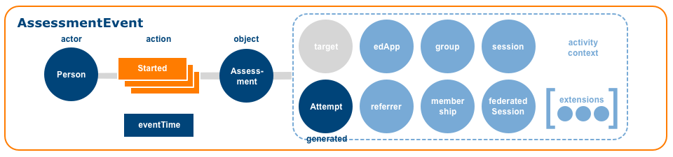

This document extends Caliper 1.1 by defining a Question & Test
Interoperability (QTI) Profile that describes assessment-related learning activities.
Overview
Design Goals and Rationale
The Caliper QTI Profile models a Person, typically a learner,
. . . . TODO
Use cases
The QTI Profile supports the following learner-centric use cases:
TODO
TODO
TODO
TODO
TODO
Terminology
All terminology used in this specification is concordant with the term
definitions in the Caliper 1.1 Specification [[!CALIPER-11]].
Conformance Statements
Document Set
Normative Documents
Caliper 1.1
This profile is an extension to the Caliper 1.1 specification [[!CALIPER-11]].
All requirements in the Caliper 1.1 specification also apply to implementations of this
specification.
JSON-LD Context
The JSON-LD Context for this profile defines all relevant term-IRI mappings
[[!CALIPER-QTI-11-CONTEXT]].
Errata
The errata [[!CALIPER-QTI-11-ERRATA]] details any errata registered for this version
of this specification since its publication.
Conformance and Certification guide
The conformance and certification guide that accompanies the Caliper 1.1 specification
defines the conformance requirements for Caliper Sensors [[!CALIPER-CERT-11]].
Informative Documents
Caliper 1.1 Implementation Guide
The implementation guide that accompanies the Caliper 1.1 specification provides
advice and guidance for implementors [[CALIPER-IMPL-11]].
Events
The QTI Profile models assessment-related activities including interactions with
individual assessment parts, sections and items. Caliper provides Assessment,
TestPart, AssessmentSection and AssessmentItem
entities for describing the object of these activities, as well as a learner's
Attempt for recording a count of the number of times an assigned resource has been
attempted. A Response is also modeled for capturing individual item responses.
AssessmentEvent

A Caliper AssessmentEvent models learner interactions with assessment
instruments such as online tests or quizzes.
The emitting application MUST provision the AssessmentEvent with a UUID. A
version 4 UUID SHOULD be generated. The UUID MUST be expressed as a URN using the form 'urn:uuid:<UUID>' per [[rfc4122]].
The action or predicate that binds the actor or subject to the
object. The value range is limited to the supported action terms listed
above. Only one action may be specified per AssessmentEvent.
Provides a count of the number of times the actor has interacted with
the object along with start time, end time and duration information. The
generated value MUST be expressed either as an object or as a
string corresponding to the attempts’s IRI.
The emitting application MUST provision the AssessmentEvent with a UUID. A
version 4 UUID SHOULD be generated. The UUID MUST be expressed as a URN using the form 'urn:uuid:<UUID>' per [[!RFC 4122]].
The action or predicate that binds the actor or subject to the
object. The value range is limited to the supported actions listed
above. Only one action may be specified per AssessmentItemEvent.
For a Completed action the learner's
TODO MAY be specified. The generated value MUST be expressed
either as an object or as a string corresponding to the attempts’s IRI.
The emitting application MUST provision the AssessmentEvent with a UUID. A
version 4 UUID SHOULD be generated. The UUID MUST be expressed as a URN using the form 'urn:uuid:<UUID>' per [[!RFC 4122]].
A Caliper ViewEvent describes an actor's examination of digital
content whenever the activity emphasizes thoughtful observation or study as opposed to
the mere retrieval of a resource.
The emitting application MUST provision the AssessmentEvent with a UUID. A
version 4 UUID SHOULD be generated. The UUID MUST be expressed as a URN using the form 'urn:uuid:<UUID>' per [[!RFC 4122]].
Caliper includes a vocabulary of actions for describing learning interactions. Each
action is based on the past-tense form of an English (en-US) verb. An
action can also indicate a change in a particular characteristic of the
object (e.g., resolution, size, speed, volume). Each action is
mapped to a persistent IRI listed in the external IMS Caliper JSON-LD context. Each action is
also linked to a brief definition ("gloss") derived in whole or in part from
Princeton University's WordNet® project in order to eliminate ambiguity and aid natural
language processing.
AssessmentEvent actions
The Caliper AssessmentEvent supports the following
actions: Started, Paused, Resumed, Restarted, Reset, Submitted, Abandoned, TimedOut.
A valid IRI MUST be specified. The IRI MUST be unique and persistent. The IRI SHOULD
also be dereferenceable, i.e., capable of returning a representation of the resource.
A URI employing the URN scheme MAY be provided in cases where a Linked Data friendly HTTP URI is either unavailable or inappropriate.
The string value MUST be set to the Term 'AssessmentTest'.
Required
identifier
string
The local identifier of the AssessmentTest. An identifier is a string of characters that
must start with a letter or an underscore ('_') and contain only Letters, underscores, hyphens ('-'),
period ('.', a.k.a. full-stop), Digits, CombiningChars and Extenders. Identifiers containing the period
character are reserved for use in prefixing, as described in the definition of variable.
Required
title
string
The title of an AssessmentTest is intended to enable the test to be selected outside of any test
session. Therefore, delivery engines may reveal the title to candidates at any time, but are not
required to do so.
A related Caliper Entity that includes or incorporates this AssessmentTest as a part of
its whole. The isPartOf value MUST be expressed either as an object or as a string
corresponding to the associated entity's IRI.
Each AssessmentTest is divided into one or more TestPart entities which may
in turn be divided into sections, sub-sections and so on. A testPart represents a major
division of the test and is used to control the basic mode parameters that apply to all sections and
sub-sections within that part.
A valid IRI MUST be specified. The IRI MUST be unique and persistent. The IRI SHOULD
also be dereferenceable, i.e., capable of returning a representation of the resource.
A URI employing the URN scheme MAY be provided in cases where a Linked Data friendly HTTP URI is either unavailable or inappropriate.
The string value MUST be set to the Term 'TestPart'.
Required
identifier
string
The local identifier of the TestPart. An identifier is a string of characters that must start with a
letter or an underscore ('_') and contain only Letters, underscores, hyphens ('-'), period
('.', a.k.a. full-stop), Digits, CombiningChars and Extenders. Identifiers containing the period
character are reserved for use in prefixing, as described in the definition of variable.
A QTI AssessmentTest that includes or incorporates this TestPart as a
part of its whole. The isPartOf value MUST be expressed either as an object or as a
string corresponding to the associated entity's IRI.
A valid IRI MUST be specified. The IRI MUST be unique and persistent. The IRI SHOULD
also be dereferenceable, i.e., capable of returning a representation of the resource.
A URI employing the URN scheme MAY be provided in cases where a Linked Data friendly HTTP URI is either unavailable or inappropriate.
The string value MUST be set to the Term 'AssessmentSection'.
Required
identifier
string
The local identifier of the AssessmentSection. An identifier is a string of characters that
must start with a letter or an underscore ('_') and contain only Letters, underscores, hyphens ('-'), period
('.', a.k.a. full-stop), Digits, CombiningChars and Extenders. Identifiers containing the period
character are reserved for use in prefixing, as described in the definition of variable.
Required
title
string
The title of an AssessmentSection is intended to enable the section to be selected in
situations where the contents of the section are not available, for example when a candidate is browsing
a test. Therefore, delivery engines may reveal the title to candidates at any time during the test but
are not required to do so.
A QTI TestPart or AssessmentSection that includes or incorporates this
AssessmentSection as a part of its whole. The isPartOf value MUST be expressed
either as an object or as a string corresponding to the associated entity's IRI.
Each AssessmentSection MAY reference one or more SectionPart entities that
enable the inclusion of the external referenced content or child assessmentSection entities to be used in this
AssessmentSection.
A QTI AssessmentItem encompasses the information that is presented to a candidate and information
about how to score the item. Scoring takes place when candidate responses are transformed into outcomes by
response processing rules.
IRI
http://purl.imsglobal.org/qti/AssessmentItem
Supertypes
TODO (MAYBE)
Properties
TODO . . . . Profile-specific type restrictions are described below:
A valid IRI MUST be specified. The IRI MUST be unique and persistent. The IRI SHOULD
also be dereferenceable, i.e., capable of returning a representation of the resource.
A URI employing the URN scheme MAY be provided in cases where a Linked Data friendly HTTP URI is either unavailable or inappropriate.
The string value MUST be set to the Term 'AssessmentSection'.
Required
identifier
string
The local identifier of the AssessmentItem. An identifier is a string of characters that
must start with a letter or an underscore ('_') and contain only Letters, underscores, hyphens ('-'),
period ('.', a.k.a. full-stop), Digits, CombiningChars and Extenders. Identifiers containing the period
character are reserved for use in prefixing, as described in the definition of variable.
Required
title
string
The title of an AssessmentItem is intended to enable the item to be selected in situations
where the full text of the itemBody is not available, for example when a candidate is browsing a set of
items to determine the order in which to attempt them. Therefore, delivery engines may reveal the title
to candidates at any time but are not required to do so.
Optional
label
string
A human readable label that can be used to describe the AssessmentItem.
A QTI TestPart or AssessmentSection that includes or incorporates this
AssessmentItem as a part of its whole. The isPartOf value MUST be expressed
either as an object or as a string corresponding to the associated entity's IRI.
A QTI AssessmentResult is used to report the results of a candidate's interaction with a
AssessmentTest and/or one or more AssessmentItem entities attempted.
IRI
http://purl.imsglobal.org/qti/AssessmentResult
Supertypes
TODO (MAYBE)
Properties
TODO . . . . Profile-specific type restrictions are described below:
A valid IRI MUST be specified. The IRI MUST be unique and persistent. The IRI SHOULD
also be dereferenceable, i.e., capable of returning a representation of the resource.
A URI employing the URN scheme MAY be provided in cases where a Linked Data friendly HTTP URI is either unavailable or inappropriate.
The string value MUST be set to the Term 'AssessmentResult'.
Required
identifier
string
The local identifier of the AssessmentResult. An identifier is a string of characters that
must start with a letter or an underscore ('_') and contain only Letters, underscores, hyphens ('-'),
period ('.', a.k.a. full-stop), Digits, CombiningChars and Extenders. Identifiers containing the period
character are reserved for use in prefixing, as described in the definition of variable.
A related Caliper Entity that includes or incorporates this AssessmentTest as a part of
its whole. The isPartOf value MUST be expressed either as an object or as a string
corresponding to the associated entity's IRI.
When a TestResult is provided any item results that are reported MUST relate only to items
that were selected for presentation as part of the corresponding test session. Furthermore, all items
selected for presentation SHOULD be reported with a corresponding itemResult.
A QTI TestResult represents . . . TODO. When a TestResult is provided any item
results that are reported MUST relate only to items that were selected for presentation as part of the
corresponding test session. Furthermore, all items selected for presentation SHOULD be reported with a
corresponding itemResult.
IRI
http://purl.imsglobal.org/qti/TestResult
Supertypes
TODO (MAYBE)
Properties
TODO . . . . Profile-specific type restrictions are described below:
A valid IRI MUST be specified. The IRI MUST be unique and persistent. The IRI SHOULD
also be dereferenceable, i.e., capable of returning a representation of the resource.
A URI employing the URN scheme MAY be provided in cases where a Linked Data friendly HTTP URI is either unavailable or inappropriate.
The string value MUST be set to the Term 'TestResult'.
Required
identifier
string
The local identifier of the TestResult. An identifier is a string of characters that
must start with a letter or an underscore ('_') and contain only Letters, underscores, hyphens ('-'),
period ('.', a.k.a. full-stop), Digits, CombiningChars and Extenders. Identifiers containing the period
character are reserved for use in prefixing, as described in the definition of variable.
Required
datestamp
DateTime
An ISO 8601 date and time value expressed with millisecond precision that indicates when the
TestResult was recorded. The value MUST be expressed using the format
YYYY-MM-DDTHH:mm:ss.SSSZ set to UTC with no offset specified.
A QTI ItemResult represents . . . TODO. The result of an item session is reported with an
itemResult. A report may contain multiple results for the same instance of an item representing
multiple attempts, progression through an adaptive item or even more detailed tracking. In these cases,
each ItemResult must have a different datestamp.
IRI
http://purl.imsglobal.org/qti/ItemResult
Supertypes
TODO (MAYBE)
Properties
TODO . . . . Profile-specific type restrictions are described below:
A valid IRI MUST be specified. The IRI MUST be unique and persistent. The IRI SHOULD
also be dereferenceable, i.e., capable of returning a representation of the resource.
A URI employing the URN scheme MAY be provided in cases where a Linked Data friendly HTTP URI is either unavailable or inappropriate.
The string value MUST be set to the Term 'ItemResult'.
Required
identifier
string
The local identifier of the ItemResult. An identifier is a string of characters that
must start with a letter or an underscore ('_') and contain only Letters, underscores, hyphens ('-'),
period ('.', a.k.a. full-stop), Digits, CombiningChars and Extenders. Identifiers containing the period
character are reserved for use in prefixing, as described in the definition of variable.
Required
sequenceIndex
integer
For an ItemResult that is reported as part of an AssessmentTest, this
attribute MUST be used to indicate the position of the AssessmentItem within the
specific instance of the AssessmentTest. The first AssessmentItem of the
first part of the AssessmentTest MUST be assigned a sequence index value of 1.
Optional
datestamp
DateTime
An ISO 8601 date and time value expressed with millisecond precision that indicates when the
TestResult was recorded. The value MUST be expressed using the format
YYYY-MM-DDTHH:mm:ss.SSSZ set to UTC with no offset specified.
Required
sessionStatus
Enumeration
The sessionStatus is used to interpret ItemVariable values. The enumerated
value set is limited to: 'final', 'initial', 'pendingResponseProcessing', and 'pendingSubmission'.
A QTI OutcomeVariable represents . . . TODO. Indicates that an OutcomeVariable
is being reported. This is the value of one of the outcomes associated with either an
AssessmentItem or AssessmentTest and defined in the corresponding ASI instance.
IRI
http://purl.imsglobal.org/qti/OutcomeVariable
Supertypes
TODO (MAYBE)
Properties
TODO . . . . Profile-specific type restrictions are described below:
A valid IRI MUST be specified. The IRI MUST be unique and persistent. The IRI SHOULD
also be dereferenceable, i.e., capable of returning a representation of the resource.
A URI employing the URN scheme MAY be provided in cases where a Linked Data friendly HTTP URI is either unavailable or inappropriate.
The string value MUST be set to the Term 'OutcomeVariable'.
Required
identifier
string
The local identifier of the OutcomeVariable. An identifier is a string of characters that
must start with a letter or an underscore ('_') and contain only Letters, underscores, hyphens ('-'),
period ('.', a.k.a. full-stop), Digits, CombiningChars and Extenders. Identifiers containing the period
character are reserved for use in prefixing, as described in the definition of variable.
Required
cardinality
Enumeration
The cardinality of the OutcomeVariable, taken from the corresponding declaration or
definition. The enumerated value set is limited to: 'multiple', 'ordered', 'record', and 'single'.
Required
baseType
Enumeration
The base type of the OutcomeVariable taken from the corresponding declaration of
definition. The enumerated value set is limited to: 'boolean', 'directedPair', 'duration', 'file', 'float',
'identifier', 'integer', 'pair', 'point', 'string', and 'uri'. The baseType value is omitted
ONLY for an OutcomeVariable with 'record' cardinality.
Optional
view
Enumeration
The views (if any) declared for the OutcomeVariable MUST be copied to the report to
enable systems that render the report to hide information not relevant in a specific situation.
If no values are given, the outcome's value should be considered relevant in all views.
Optional
normalMaximum
Double
The normalMaximum attribute optionally defines the maximum magnitude of numeric
outcome variables. The normalMaximum MUST be a positive value. If given, the outcome's
value can be divided by normalMaximum and then truncated (if necessary) to obtain a
normalized score in the range [-1.0,1.0]. normalMaximum has no affect on responseProcessing
or the values that the OutcomeVariable itself can take.
Optional
normalMinimum
Double
The normalMinimum attribute optionally defines the minimum value of numeric outcome
variables. The value MAY be negative.
Optional
masteryValue
Double
The masteryValue attribute optionally defines a value for numeric outcome variables
above which the aspect being measured is considered to have been mastered by the candidate.
Optional
value
Array
The value(s) of the OutcomeVariable. The order of the values is significant only if
the outcome was declared with ordered cardinality.
A QTI ResponseVariable represents . . . TODO. Indicates that a ResponseVariable is
being reported. This is the value of one of the responses associated with an AssessmentItem in
the corresponding ASI instance.
IRI
http://purl.imsglobal.org/qti/ResponseVariable
Supertypes
TODO (MAYBE)
Properties
TODO . . . . Profile-specific type restrictions are described below:
A valid IRI MUST be specified. The IRI MUST be unique and persistent. The IRI SHOULD
also be dereferenceable, i.e., capable of returning a representation of the resource.
A URI employing the URN scheme MAY be provided in cases where a Linked Data friendly HTTP URI is either unavailable or inappropriate.
The string value MUST be set to the Term 'ResponseVariable'.
Required
identifier
string
The local identifier of the ResponseVariable. An identifier is a string of characters that
must start with a letter or an underscore ('_') and contain only Letters, underscores, hyphens ('-'),
period ('.', a.k.a. full-stop), Digits, CombiningChars and Extenders. Identifiers containing the period
character are reserved for use in prefixing, as described in the definition of variable.
Required
cardinality
Enumeration
The cardinality of the ResponseVariable, taken from the corresponding declaration or
definition. The enumerated value set is limited to: 'multiple', 'ordered', 'record', and 'single'.
Required
baseType
Enumeration
The base type of the ResponseVariable, taken from the corresponding declaration of
definition. The enumerated value set is limited to: 'boolean', 'directedPair', 'duration', 'file', 'float',
'identifier', 'integer', 'pair', 'point', 'string', and 'uri'. The baseType value is omitted
ONLY for an ResponseVariable with 'record' cardinality.
Optional
choiceSequence
Array
When a ResponseVariable is bound to an interaction that supports the shuffling of
choices, the sequence of choices experienced by the candidate will vary between test instances.
When shuffling is in effect, the sequence of choices should be reported as a sequence of choice
identifiers using this attribute. The list consist of values of data-type(s): NCName (Primitive-type).
Optional
correctResponse
CorrectResponse
The CorrectResponse may be output as part of the report if desired. Systems are not
limited to reporting correct responses declared in responseDeclarations. For example, a correct response
may be set by a templateRule or may simply have been suppressed from the declaration passed
to the delivery engine e.g. for security.
A valid IRI MUST be specified. The IRI MUST be unique and persistent. The IRI SHOULD
also be dereferenceable, i.e., capable of returning a representation of the resource.
A URI employing the URN scheme MAY be provided in cases where a Linked Data friendly HTTP URI is either unavailable or inappropriate.
The string value MUST be set to the Term 'TemplateVariable'.
Required
identifier
string
The local identifier of the TemplateVariable. An identifier is a string of characters that
must start with a letter or an underscore ('_') and contain only Letters, underscores, hyphens ('-'),
period ('.', a.k.a. full-stop), Digits, CombiningChars and Extenders. Identifiers containing the period
character are reserved for use in prefixing, as described in the definition of variable.
Required
cardinality
Enumeration
The cardinality of the TemplateVariable, taken from the corresponding declaration or
definition. The enumerated value set is limited to: 'multiple', 'ordered', 'record', and 'single'.
Required
baseType
Enumeration
The base type of the TemplateVariable, taken from the corresponding declaration of
definition. The enumerated value set is limited to: 'boolean', 'directedPair', 'duration', 'file', 'float',
'identifier', 'integer', 'pair', 'point', 'string', and 'uri'. The baseType value is omitted
ONLY for an TemplateVariable with 'record' cardinality.
Optional
value
Array
The value(s) of the TemplateVariable. The order of the values is significant only if the
TemplateVariable was declared with ordered cardinality.
A QTI CorrectResponse . . . TODO. The correct response may be included as part of the report if
desired. Systems are not limited to reporting correct responses declared in response declarations. For example,
a CorrectResponse may be set by a templateRule or may simply have been suppressed from the
declaration passed to the delivery engine e.g. for security.
IRI
http://purl.imsglobal.org/qti/CorrectResponse
Supertypes
TODO (MAYBE)
Properties
TODO . . . . Profile-specific type restrictions are described below:
A valid IRI MUST be specified. The IRI MUST be unique and persistent. The IRI SHOULD
also be dereferenceable, i.e., capable of returning a representation of the resource.
A URI employing the URN scheme MAY be provided in cases where a Linked Data friendly HTTP URI is either unavailable or inappropriate.
A valid IRI MUST be specified. The IRI MUST be unique and persistent. The IRI SHOULD
also be dereferenceable, i.e., capable of returning a representation of the resource.
A URI employing the URN scheme MAY be provided in cases where a Linked Data friendly HTTP URI is either unavailable or inappropriate.
The string value MUST be set to the Term 'CandidateResponse'.
Required
value
Array
The value(s) of the ResponseVariable. A NULL value, resulting from no response, is
indicated by the absence of any value. The order of the values is significant only if the response
was declared with ordered cardinality.
A QTI Value represents a single value of any baseType in variable declarations and result
reports. The base-type is defined by the baseType attribute of the declaration except in
the case of variables with 'record' cardinality.
IRI
http://purl.imsglobal.org/qti/CandidateResponse
Supertypes
TODO (MAYBE)
Properties
TODO . . . . Profile-specific type restrictions are described below:
A valid IRI MUST be specified. The IRI MUST be unique and persistent. The IRI SHOULD
also be dereferenceable, i.e., capable of returning a representation of the resource.
A URI employing the URN scheme MAY be provided in cases where a Linked Data friendly HTTP URI is either unavailable or inappropriate.
This attribute is only used for specifying the base-type of a Value that forms
part of a record.
Optional
fieldIdentifier
string
This attribute is only used for specifying the fieldIdentifier for a Value
that forms part of a record. The fieldIdentifier is a string of characters that must
start with a Letter or an underscore ('_') and contain only Letters, underscores, hyphens ('-'),
period ('.', a.k.a. full-stop), Digits, CombiningChars and Extenders. Identifiers containing the period
character are reserved for use in prefixing, as described in the definition of variable.
Optional
entry
string
The actual value provided by the candidate in the form of a string.
Individual Caliper events and entity describes are serialized as JSON-LD. IMS Global
provides a remote QTI Profile JSON-LD context for mapping
Event terms to IRIs. Caliper message producers MUST reference this
context in every Caliper 1.1 Event and/or Entity describe created and serialized for transmission to a target endpoint.
See the Caliper 1.1 specification [[!CALIPER-11]] for a discussion of JSON-LD and JSON-LD
context handling.